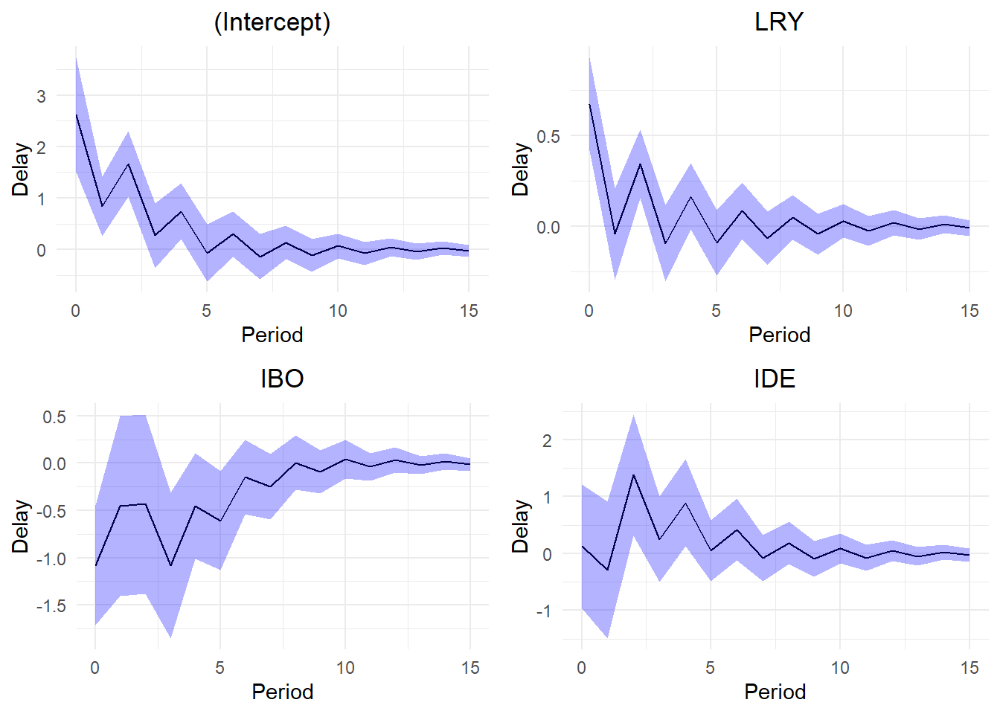
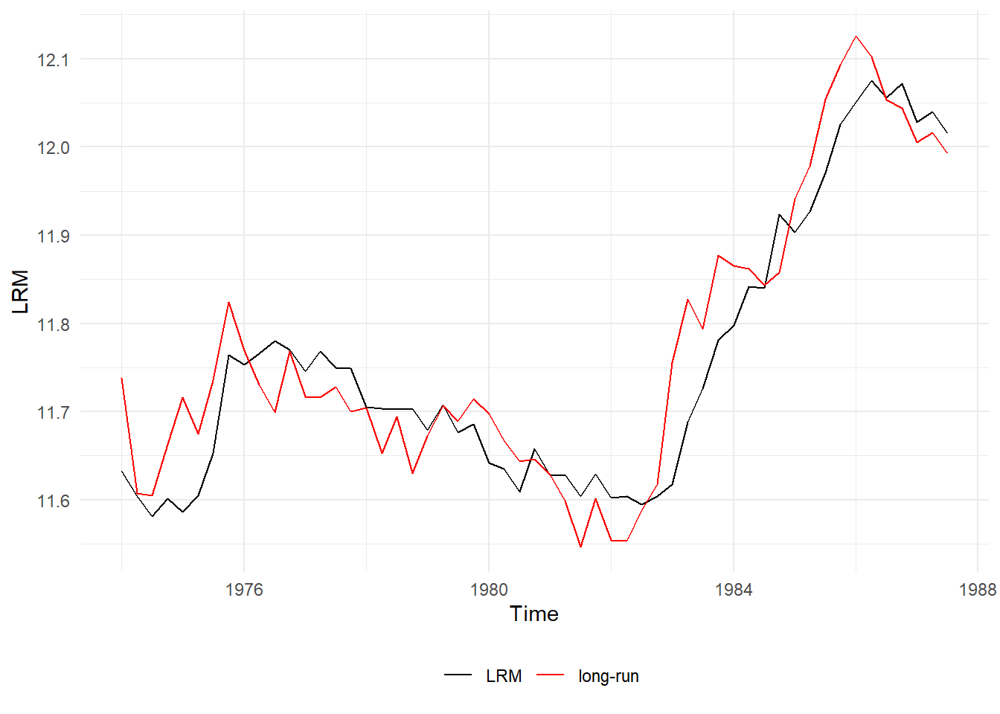
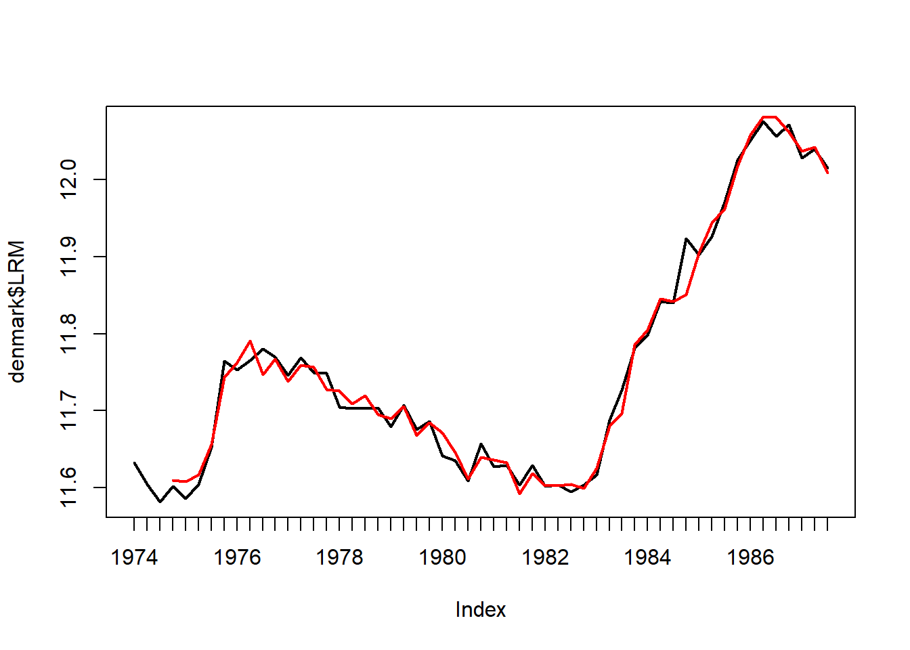

This is a basic example which shows how to use the main functions of the ARDL package.
Assume that we want to model the LRM (logarithm of real money, M2) as a function of LRY, IBO and IDE (see ?denmark). The problem is that applying an OLS regression on non-stationary data would result into a spurious regression. The estimated parameters would be consistent only if the series were cointegrated.
library(ARDL)
To cite the ARDL package in publications:
Use this reference to refer to the validity of the ARDL package.
Natsiopoulos, Kleanthis, and Tzeremes, Nickolaos G. (2022). ARDL
bounds test for cointegration: Replicating the Pesaran et al. (2001)
results for the UK earnings equation using R. Journal of Applied
Econometrics, 37(5), 1079-1090. https://doi.org/10.1002/jae.2919
Use this reference to cite this specific version of the ARDL package.
Kleanthis Natsiopoulos and Nickolaos Tzeremes (2023). ARDL: ARDL, ECM
and Bounds-Test for Cointegration. R package version 0.2.4.
https://CRAN.R-project.org/package=ARDL
data(denmark)
First, we find the best ARDL specification. We search up to order 5.
models <-auto_ardl(LRM ~ LRY + IBO + IDE, data = denmark, max_order =5)# The top 20 models according to the AICmodels$top_orders
And also the RECM (Restricted Error Correction Model) of the underlying ARDL(3,1,3,2), allowing the constant to join the long-run relationship (case 2), instead of the short-run (case 3).
recm_3132 <-recm(uecm_3132, case =2)summary(recm_3132)
Time series regression with "zooreg" data:
Start = 1974 Q4, End = 1987 Q3
Call:
dynlm::dynlm(formula = full_formula, data = data, start = start,
end = end)
Residuals:
Min 1Q Median 3Q Max
-0.029939 -0.008856 -0.002562 0.008190 0.072577
Coefficients:
Estimate Std. Error t value Pr(>|t|)
d(L(LRM, 1)) -0.26394 0.09008 -2.930 0.005405 **
d(L(LRM, 2)) 0.26867 0.09127 2.944 0.005214 **
d(LRY) 0.67280 0.11591 5.805 7.03e-07 ***
d(IBO) -1.07852 0.30025 -3.592 0.000837 ***
d(L(IBO, 1)) 0.70701 0.44359 1.594 0.118300
d(L(IBO, 2)) 0.99468 0.36491 2.726 0.009242 **
d(IDE) 0.12546 0.48290 0.260 0.796248
d(L(IDE, 1)) -1.40786 0.48867 -2.881 0.006160 **
ect -0.41685 0.07849 -5.311 3.63e-06 ***
---
Signif. codes: 0 '***' 0.001 '**' 0.01 '*' 0.05 '.' 0.1 ' ' 1
Residual standard error: 0.01819 on 43 degrees of freedom
(0 observations deleted due to missingness)
Multiple R-squared: 0.7613, Adjusted R-squared: 0.7113
F-statistic: 15.24 on 9 and 43 DF, p-value: 9.545e-11
Finally, we can test the stability of the coefficients of the ARDL(3,1,3,2) model. As discussed earlier @fig-
Let’s test if there is a long-run levels relationship (cointegration) using the bounds test from Pesaran et al. (2001).
The bounds F-test (under the case 2) rejects the NULL hypothesis (let’s say, assuming alpha = 0.01) with p-value = 0.004418.
bounds_f_test(ardl_3132, case =2)
Bounds F-test (Wald) for no cointegration
data: d(LRM) ~ L(LRM, 1) + L(LRY, 1) + L(IBO, 1) + L(IDE, 1) + d(L(LRM, 1)) + d(L(LRM, 2)) + d(LRY) + d(IBO) + d(L(IBO, 1)) + d(L(IBO, 2)) + d(IDE) + d(L(IDE, 1))
F = 5.1168, p-value = 0.004418
alternative hypothesis: Possible cointegration
null values:
k T
3 1000
The bounds F-test rejects the NULL hypothesis of no cointegration. Therefore, we can conclude that there is a long-run relationship between the series.
# The bounds F-test (under the case 3) rejects the NULL hypothesis (let's say, assuming alpha = 0.01) with p-value = 0.004418.bounds_f_test(ardl_3132, case =3)
Bounds F-test (Wald) for no cointegration
data: d(LRM) ~ L(LRM, 1) + L(LRY, 1) + L(IBO, 1) + L(IDE, 1) + d(L(LRM, 1)) + d(L(LRM, 2)) + d(LRY) + d(IBO) + d(L(IBO, 1)) + d(L(IBO, 2)) + d(IDE) + d(L(IDE, 1))
F = 6.2059, p-value = 0.004146
alternative hypothesis: Possible cointegration
null values:
k T
3 1000
# The bounds t-test (under the case 3) rejects the NULL hypothesis (let's say, assuming alpha = 0.01) with p-value = 0.005538.# We also provide the critical value bounds for alpha = 0.01.tbounds <-bounds_t_test(uecm_3132, case =3, alpha =0.01)tbounds
Bounds t-test for no cointegration
data: d(LRM) ~ L(LRM, 1) + L(LRY, 1) + L(IBO, 1) + L(IDE, 1) + d(L(LRM, 1)) + d(L(LRM, 2)) + d(LRY) + d(IBO) + d(L(IBO, 1)) + d(L(IBO, 2)) + d(IDE) + d(L(IDE, 1))
t = -4.5479, Lower-bound I(0) = -3.4430, Upper-bound I(1) = -4.3799,
p-value = 0.005538
alternative hypothesis: Possible cointegration
null values:
k T
3 1000
Here we have the short-run and the long-run multipliers (with standard errors, t-statistics and p-values).
multipliers(ardl_3132, type ="sr")
Term Estimate Std. Error t value Pr(>|t|)
1 (Intercept) 2.6201916 0.5677679 4.6148990 4.186867e-05
2 LRY 0.6727993 0.1311638 5.1294603 8.317401e-06
3 IBO -1.0785180 0.3217011 -3.3525465 1.790030e-03
4 IDE 0.1254643 0.5544522 0.2262852 8.221614e-01
We can also estimate and visualize the delay multipliers along with their standard errors.
mult15 <-multipliers(ardl_3132, type =15, se =TRUE)plot_delay(mult15, interval =0.95)

Now let’s graphically check the estimated long-run relationship (cointegrating equation) against the dependent variable LRM.
ce <-coint_eq(ardl_3132, case =2)plot_lr(ardl_3132, coint_eq = ce, show.legend =TRUE)

Finally, we can forecast the dependent variable LRM using the ARDL(3,1,3,2) model.
Forecasting and using an ardl, uecm, or recm model in other functions are easy as they can be converted in regular lm models.
ardl_3132_lm <-to_lm(ardl_3132)# Forecast using the in-sample datainsample_data <- ardl_3132$modelpredicted_values <-predict(ardl_3132_lm, newdata = insample_data)# Convert to ts class for the plotpredicted_values <-ts(predicted_values, start =c(1974,4), frequency=4)plot(denmark$LRM, lwd=2) #The input dependent variablelines(predicted_values, col="red", lwd=2) #The predicted values

Figure 1: The red line represents the forecasted values of the dependent variable LRM using the ARDL(3,1,3,2) model.
As per Figure 1, the red line represents the forecasted values of the dependent variable LRM using the ARDL(3,1,3,2) model. Similarly we do this in ?@sec-ease-of-use.
Ease of use
Let’s see what it takes to build the above ARDL(3,1,3,2) model.
Using the ARDL package (literally one line of code):
ardl_model <-ardl(LRM ~ LRY + IBO + IDE, data = denmark, order =c(3,1,3,2))
Without the ARDL package: (Using the dynlm package, because striving with the lm function would require extra data transformation to behave like time-series)
library(dynlm)
Loading required package: zoo
Attaching package: 'zoo'
The following objects are masked from 'package:base':
as.Date, as.Date.numeric
An ARDL model has a relatively simple structure, although the difference in typing effort is noticeable. Figure 1 shows the multipliers of the ARDL(3,1,3,2) model.
Not to mention the complex transformation for an ECM. The extra typing is the least of your problems trying to do this. First you would need to figure out the exact structure of the model!
Using the ARDL package (literally one line of code):